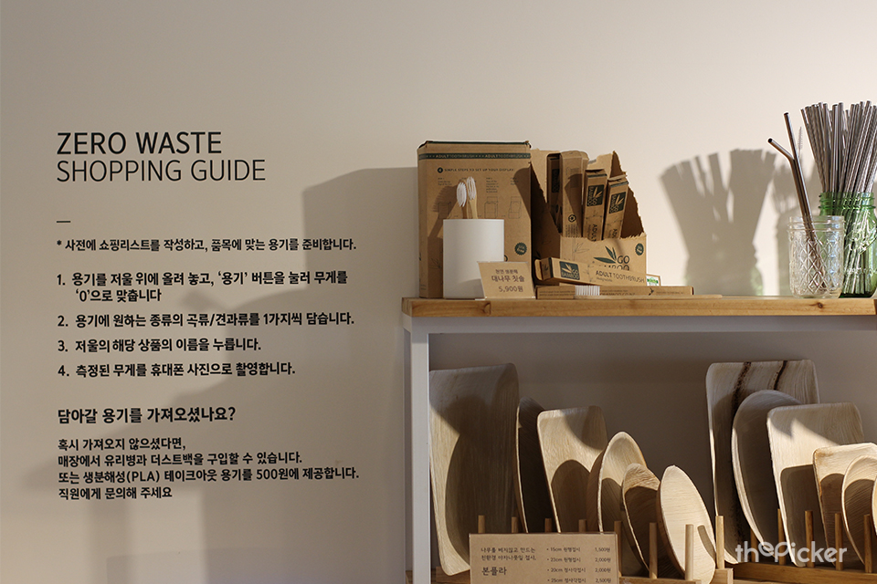

주소: 서울시 성동구 왕십리로 115, 헤이그라운드 9층
ZERO WASTE LIFESTYLE STORE IN KOREA
더 피커는 국내최초 제로웨이스트 플랫폼으로, 포장 폐기물 감소를 중심으로 다양한 쓰레기의 발생을 관찰하고 줄여 나갑니다.
지속가능한 환경이 자연스럽게 존재하던 과거와 끊임 없이 소통하며 자원의 순환과 건강한 소비문화의 회복에 힘씁니다.


더 피커는 국내최초 제로웨이스트 플랫폼으로, 포장 폐기물 감소를 중심으로 다양한 쓰레기의 발생을 관찰하고 줄여 나갑니다.
지속가능한 환경이 자연스럽게 존재하던 과거와 끊임 없이 소통하며 자원의 순환과 건강한 소비문화의 회복에 힘씁니다.